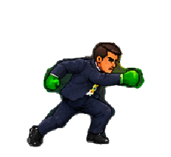
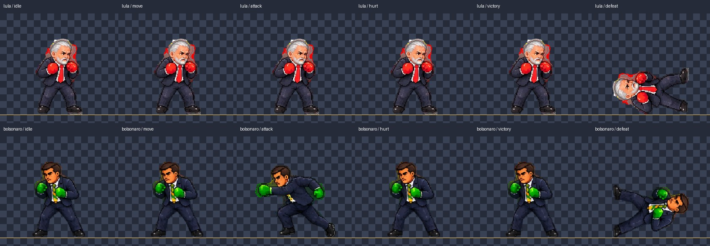

REVISÃO DOS SPRITES
Originais: 1536 × 1024, RGBA com transparência. Recortes: 280 × 256, pés na linha y = 240 e altura de guarda de 180 px. O Bolsonaro é espelhado somente na apresentação.



Estados de animação

Parado: respiração por escala vertical. Movimento: deslocamento da guarda. Ataque: avanço da guarda para Lula; troca para o soco disponível para Bolsonaro. Dano: recuo e inclinação. Vitória: pulso sutil da guarda. Derrota: rotação e queda da guarda. Essas transformações reutilizam poses reais; não representam sequências desenhadas ausentes nas spritesheets.
Seleção e descarte
Descartados: soco e uppercut candidatos de Lula, poses candidatas de caminhada, dano, vitória e derrota com sobreposição ou bordas cortadas. Fragmentos de sapatos vizinhos fora das guardas foram excluídos por máscara; componentes desconectados e franjas de alfa abaixo de 96 foram removidos. Os detalhes vermelhos e verdes integrados à arte original permanecem. Confira a imagem ampliada antes da integração.
Dimensões e transparência · Coordenadas e alinhamento · Testar a luta